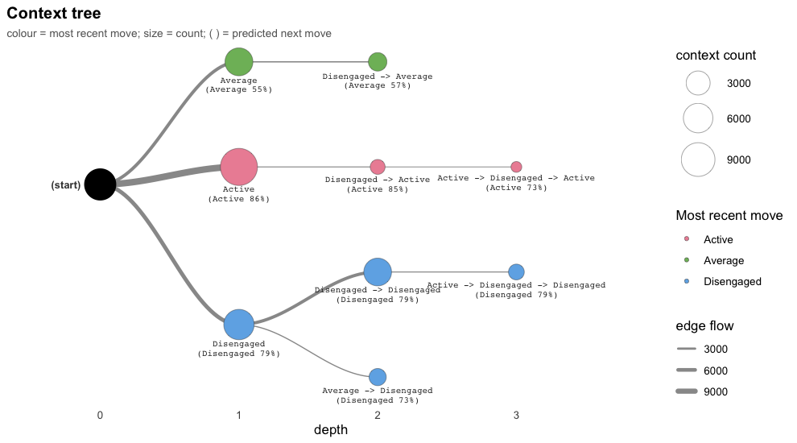

Vignettes and guides
Vignettes
Guides
- A complete workflow
- Data input: wide sequences, event logs and network objects
- Smoothing and pruning
- Model selection: tuning, fit and perplexity
- Pathway reliability with the bootstrap
- Prediction, scoring, imputation and mining
- Visualizing transition trees
- Verification against the PST package
Case studies
Overview
transitiontrees models how categorical processes unfold: how one state follows another in weekly engagement, collaborative regulation or the turns of a human-AI conversation. It fits variable-order transition trees, also known as prediction suffix trees (Ron, Singer, & Tishby, 1996) or variable-length Markov chains (Bühlmann & Wyner, 1999), in which the length of history used to predict the next state differs from one history to another: the tree is deep where earlier states change the prediction and shallow where they do not. Each branch is a pathway, a run of recent states with the distribution of the state that followed it. The package reports which pathways occur, which change the prediction relative to a shorter history, how stable they are under the bootstrap, and whether they differ between groups, separating differences in what follows a history from differences in how often the history occurs.
Trees are fitted from wide sequence data, long event logs and sequence-bearing network objects; pruned by likelihood-ratio tests or information criteria; evaluated by log likelihood, information criteria and perplexity; and used to predict, score, simulate and impute sequences. Results are tidy data frames, and plots are ggplot2 objects.
Variable-order transition trees
For a sequence over a set of states , a context is a run of recent states , and each context in the tree carries a next-state distribution . A new state is predicted from the longest suffix of its history that is a context in the tree, , so that . A context receives a node when it is no longer than max_depth and occurs at least min_count times; its distribution is estimated from the counts and smoothed so that unobserved next states keep a small probability. A leaf is pruned when its counts are consistent with the prediction of its parent , the context with the oldest state removed, under the likelihood-ratio test
or under an AIC or BIC penalty (Ron, Singer, & Tishby, 1996; Bühlmann & Wyner, 1999; Gabadinho & Ritschard, 2016). Pathways are written oldest state first (Average -> Disengaged), and the empty context is shown as (start).
Installation
install.packages("transitiontrees")
# development version
install.packages("remotes")
remotes::install_github("mohsaqr/transitiontrees")Example
engagement holds the weekly engagement states (Active, Average, Disengaged) of 1,000 students. The tree below allows histories of up to three weeks, and pruning keeps the contexts that pass the test.
library(transitiontrees)
tree <- context_tree(engagement, max_depth = 3, min_count = 10)
pruned <- prune_tree(tree, criterion = "G2", alpha = 0.05)
model_fit(pruned)
#> logLik df nobs AIC BIC perplexity
#> 1 -16181 20 24555 32403 32565 1.93Pathways that change the prediction made from the shorter history are ranked by divergent_pathways().
divergent_pathways(pruned, top = 5)
#> pathway depth count likely_next next_probability divergence
#> 1 Disengaged 1 6598 Disengaged 0.786 0.9453
#> 2 Active 1 11894 Active 0.859 0.4183
#> 3 Average 1 5063 Average 0.548 0.3836
#> 4 Active -> Disengaged -> Active 3 22 Active 0.727 0.2546
#> 5 Active -> Disengaged -> Disengaged 3 449 Disengaged 0.788 0.0113
#> changes_prediction
#> 1 TRUE
#> 2 FALSE
#> 3 TRUE
#> 4 FALSE
#> 5 FALSEplot() draws the tree from the root on the left, with node size proportional to the context count and the modal next state under each node.
plot(pruned)
plot of chunk plot-tree
predict() applies the longest-suffix rule to new histories; with tidy = TRUE it returns one row per history with the context used and the next-state distribution.
predict(pruned, newdata = list(c("Active", "Average"),
c("Average", "Disengaged")),
tidy = TRUE)
#> id history context predicted probability Active Average
#> 1 1 Active -> Average Average Average 0.548 0.3052 0.548
#> 2 2 Average -> Disengaged Average -> Disengaged Disengaged 0.734 0.0556 0.210
#> Disengaged
#> 1 0.147
#> 2 0.734Authors and citation
transitiontrees is written by Mohammed Saqr and Sonsoles López-Pernas. Mohammed Saqr maintains the package. Questions and bug reports can be submitted through the repository issue tracker. The package citation is available through citation("transitiontrees").
References
Bühlmann, P., & Wyner, A. J. (1999). Variable length Markov chains. The Annals of Statistics, 27(2), 480–513. https://doi.org/10.1214/aos/1018031204
Gabadinho, A., & Ritschard, G. (2016). Analyzing state sequences with probabilistic suffix trees: The PST R package. Journal of Statistical Software, 72(3). https://doi.org/10.18637/jss.v072.i03
Ron, D., Singer, Y., & Tishby, N. (1996). The power of amnesia: Learning probabilistic automata with variable memory length. Machine Learning, 25(2–3), 117–149. https://doi.org/10.1023/A:1026490906255